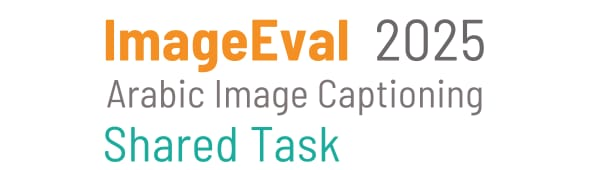

REGISTRATION
Registration is now open until 20 July 2025. To register your team please use this link.
For further details you can reach us by Slack or imageeval2025@gmail.com..
INTRODUCTION
Image captioning, the automatic generation of natural language descriptions for images, is a key technology powering applications such as accessibility tools, image search, social media automation, and human-robot interaction. While significant advancements have been achieved in English and other widely spoken languages, Arabic image captioning remains underexplored. The task poses unique linguistic challenges—not only due to Arabic’s complex morphology and syntax, but also because of its rich cultural diversity and wide range of dialectal variations. This shared task aims to advance Arabic image captioning by achieving two key goals: (1) creating the first open-source, manually-captioned dataset developed natively in Arabic. and (2) fostering progress in Arabic NLP by encouraging researchers to develop novel multimodal models in this emerging and impactful field.
Subtask 1: Image Captioning Datathon
Objective: This subtask aims to create an open-source image dataset with captions that are culturally appropriate and naturally written in Arabic. The goal is to support the development of Arabic-native image captioning resources by encouraging participants to manually craft meaningful, context-aware descriptions that reflect Arabic culture and language use.
Dataset:
Participating teams will be provided with 4,000 open-source images, divided into 16 batches of 250 images each. All teams are required to caption Batch 1 and Batch 2, and any additional batch they choose must be completed in full. Image batches will be distributed via Google Drive after registration.
Captions must be written manually—without the use of generative AI tools—and should be natural, culturally appropriate, and contextually aligned with the image content. Participants will receive minimal captioning guidelines along with the image collection labels. For example, a label like “kids’ theater in a refugee camp” provides insight into a collection of 50 images, helping teams craft meaningful captions for the images in this collection.
Submission Format:
Participants should submit a CSV file containing the manually written captions. This file must include the following columns:
The CSV file should be uploaded to CodaLab. Submissions will be automatically validated to ensure that all images in the selected batches are captioned. Incomplete submissions (e.g., missing images in a batch) will be flagged.
Evaluation: Submissions will be evaluated on three criteria:
Quantity - The number of images captioned (more is better)
Quality - Caption accuracy measured using metrics such as ROUGE, BLEU, and LLM as a judge to compare submissions against our confidential subset of images with ground truth captions.
Captioning Guidelines - Each team must provide their own comprehensive guidelines that address:
The guidelines will be assessed on their soundness and thoroughness. The more robust your guidelines, the higher your evaluation score.
You may refer to a sample set of images and their captions.
Subtask 2: Image Captioning Models Evaluation
Objective: The goal of this subtask is to develop Arabic image captioning models that produce culturally relevant and contextually accurate descriptions of images. Participants will receive training data to develop their models, while evaluation will be conducted on a private, unseen test set hosted on CodaLab. Participants may fine-tune their models using the provided training data or apply zero- or few-shot approaches to generate captions directly for the test set.
Dataset:
Participating teams will be provided with a manually-captioned dataset consisting of 3471 images, split into 2718 images for training and 753 for testing. The training set will be shared with participants to develop their models. It can be downloaded from Huggingface.
At a later stage, the test set (753 images) will be released for automatic captioning. Participants will then submit their generated captions via CodaLab. These submissions will be evaluated against the ground truth captions using established evaluation metrics.
Submission Format:
Participants should submit a CSV file containing the automatically generated captions for the test set. This file must include the following columns:
The CSV file should be uploaded to CodaLab.
Evaluation Metrics:
LLM as a judge to evaluate and score equivalence against the ground truth test set. A large language model will be used to evaluate and score the semantic equivalence of generated outputs against the ground truth in the test set.
ROUGE (Recall-Oriented Understudy for Gisting Evaluation)
BLEU (Bilingual Evaluation Understudy)
Baseline:
Two baseline models are provided: one using a zero-shot approach and the other fine-tuned on our dataset.
The code used to produce these baselines is available on GitHub, Fine-tuned Model.
Google Colab notebook: To allow participants to experiment and reproduce baseline results, we provide three Google Colab notebooks that demonstrate how to train and evaluate our baseline models.
[1] Zero-shot Model: This notebook demonstrates how to use the Qwen 2.5-VL 7B model in a zero-shot setting, without fine-tuning. We evaluated the model using the test dataset (which will be shared with participants during the testing phase). See Colab Notebook for zero-shot image captioning.
The model’s performance is summarized and presented in the table below using the official evaluation metrics. See Colab Notebook for evaluation.
| Metric | Results |
|---|---|
| bleu1_mean | 0.0992 |
| bleu2_mean | 0.0323 |
| bleu3_mean | 0.019 |
| bleu4_mean | 0.0133 |
| rouge1_mean | 0.0 |
| rouge2_mean | 0.0 |
| rougeL_mean | 0.0 |
| cosine_similarity_mean | 0.5577/td> |
[2] Fine-tune Model: This notebook can be used to fine-tune Qwen 2.5-VL 7B model, using the training data provided in Subtask 2, and evaluate its performance on the test dataset. See Colab Notebook for fine-tuning Qwen2.5-VL 7B model for image captioning.
The evaluation results and corresponding metrics are presented in the following table.
| Metric | Results |
|---|---|
| bleu1_mean | 0.1698 |
| bleu2_mean | 0.0862 |
| bleu3_mean | 0.0543 |
| bleu4_mean | 0.0305 |
| rouge1_mean | 0.0 |
| rouge2_mean | 0.0 |
| rougeL_mean | 0.0 |
| cosine_similarity_mean | 0.5846 |
[3] Evaluate Image Captioning Models: This notebook uses the baseline results to evaluate model performance on the test dataset. It supports evaluation for both zero-shot and fine-tuned models.See Google Colab for Evaluating Image Captioning Models.
LLM as a Judge:
In addition to standard metrics, we also use a large language model GPT 4o model as an automatic judge to assess caption quality and compute model accuracy through pairwise comparison with ground truth captions.
The evaluation results are in the following table:
| Model | LLM-as-a-Judge Average Score (GPT 4o), temperature = 0.0 |
|---|---|
| Zero-shot Qwen 2.5-VL 7B | 27.11 % |
| Fine-tuned Qwen 2.5-VL 7B | 30.82% |
Guidelines for Participating Teams
Participants may choose to participate in one or both subtasks.
All participants must register through the official website to receive access to datasets and updates. Registration is required to gain access to the image batches (for Subtask 1) and the test set (for Subtask 2).
Upon requesting access to the data, participants must agree to submit a 4-page system description paper detailing their approach, methodology, data usage (if external data is used - specify rules!), and findings.
Submissions will be peer-reviewed, and selected papers will be published in the Arabic NLP 2025 Conference Proceedings, indexed in the ACL Anthology.
Participants are required to create an OpenReview account for paper submission and review processes.
All submitted captions from all participants will be published in a shared GitHub repository under the CC-BY-4.0 License.
IMPORTANT DATES
- June 1, 2025: Data-sharing and Evaluation on Development Set Available
- July 20, 2025: Shared Task Registration Deadline and Test Set Release
- July 25, 2025: Evaluation on Test Set (TEST) Deadline
- July 30, 2025: Final Results Announcement
- August 15, 2025: Shared Task System Paper Submission Due
- August 25, 2025: Notification of Acceptance
- September 5, 2025: Camera-ready Version Due
- November 5–9, 2025: ArabicNLP Main Conference
Contact
For any questions related to this task, please contact the organizers directly using the following email address: imageeval2025@gmail.com.
ORGANIZERS
- Ahlam Bashiti, abashiti@birzeit.edu, Birzeit University
- Alaa Aljabari, aaljabari@birzeit.edu, Birzeit University
- Mustafa Jarrar, mjarrar@birzeit.edu, Hamad Bin Khalifa University / Birzeit University.
- Fadi Zaraket, fadi.zaraket@dohainstitute.edu.qa, Arab Center for Research and Policy Studies / American University of Beirut.
- Bilal Shalash, bilal.shalash@dohainstitute.org, Arab Center for Research and Policy Studies.
- George Mikros, gmikros@hbku.edu.qa, Hamad Bin Khalifa University.
- Wajdi Zaghouani, wajdi.zaghouani@northwestern.edu, Northwestern University in Qatar.
- Ehsaneddin Asgari, easgari@hbku.edu.qa, Hamad Bin Khalifa University.
- Hadi Hamoud, hhamoud@dohainstitute.edu.qa, Arab Center for Research and Policy Studies.
- Md. Rafiul Biswas, mbiswas@hbku.edu.qa, Hamad Bin Khalifa University.